Исследовать задачу
В исходном проекте представлены персоны и CJM: мотивация, барьеры и ожидания на разных этапах заказа.
Your Meal / UX · UI / 2025
Сервис доставки готовой еды.
От выбора блюда до оформленного заказа.
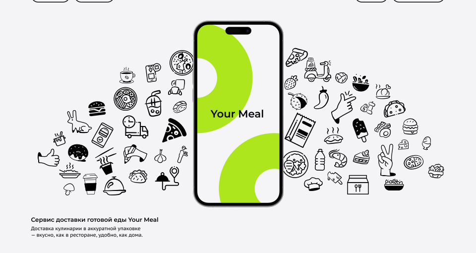
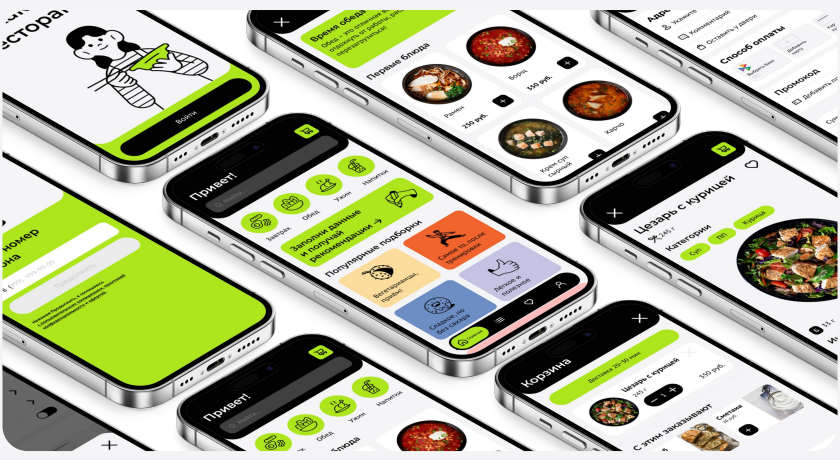
01 / Задача
Спроектировать современный и понятный интерфейс заказа готовой еды и проработать сценарий покупки одного блюда. Фокус кейса — путь от выбора до подтверждения, с вниманием к составу, оплате и условиям доставки.
В исходном проекте представлены персоны и CJM: мотивация, барьеры и ожидания на разных этапах заказа.
User Flow, вайрфреймы и последовательность экранов покупки одного блюда.
Каталог, карточка блюда, корзина, оформление и подтверждение заказа в единой визуальной системе.
02 / Исследование аудитории
В проекте представлены две персоны. Они описывают близкую потребность — тратить меньше усилий на питание, — но разные критерии доверия к сервису. Персоны здесь рассматриваются как исследовательский артефакт, а не как два подтверждённых участника интервью.
Анна / 32 / Фитнес-тренер
Важны состав, калорийность и подходящие блюда. Есть опасение, что за полезной едой окажутся тяжёлые соусы и жареные продукты. Питание должно вписываться в тренировки.
Критерий выбораДостаточно информации о блюде до добавления в корзину.
Егор / 44 / Предприниматель
Хочет упростить питание, но не ориентируется в калориях. Ему нужны понятные подборки и уверенность в том, что еда приедет вовремя, тёплой и вкусной.
Критерий выбораПонятная навигация и предсказуемые условия заказа.
В PDF не приведены размер и состав выборки, гайд интервью или частоты ответов. Поэтому выводы ниже привязаны к представленным персонам и CJM.
03 / CJM
Карта пути охватывает подготовку к заказу, оформление и доставку. Она показывает, где пользователю приходится сравнивать сервисы, ждать или сомневаться в качестве.
В CJM поиск сервиса описан как длительный этап. Для интерфейса это основание показывать категории и подборки по запросу — например, лёгкие блюда или еду после тренировки.
Повторный пользователь уже знает, куда нажимать. Важны быстрый доступ к блюдам, понятные дополнения, адрес и видимая итоговая сумма.
В карте отмечено предпочтение конкретного времени и недоверие к обращению с упаковкой. Это одновременно задача интерфейса и процесса доставки.
«Предпочитаю видеть конкретное число, а не расплывчатое “в течение часа”».
Фраза из CJM проекта; атрибуция и метод сбора исходных данных в PDF не раскрыты.
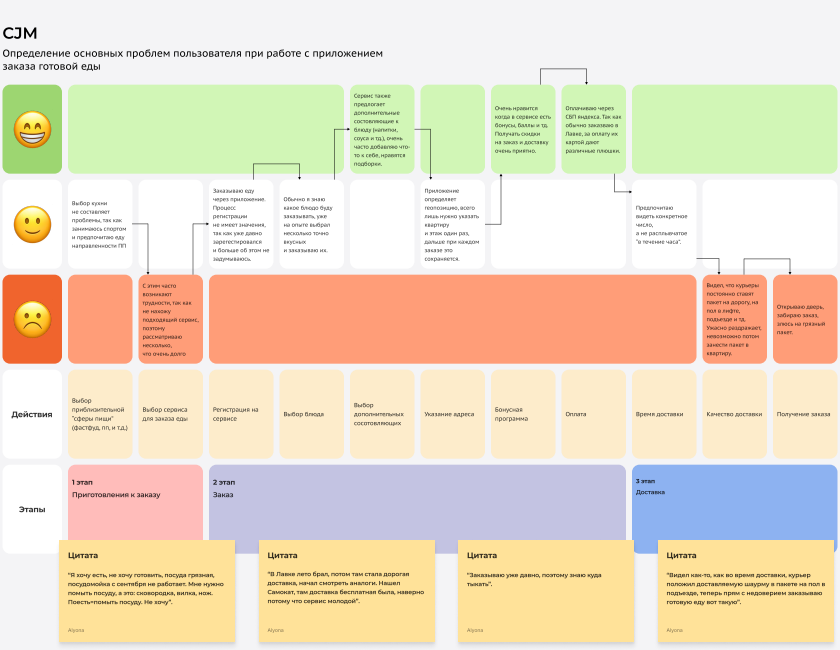
04 / От наблюдения к решению
Персоны и карта пути стали основой требований к выбору и оформлению. Важно отделить показанные решения от задач, которые концепция пока не закрывает.
В макете блюда есть вес, категории, ингредиенты и показатели пищевой ценности. Пользователь может оценить блюдо до покупки.
На главной доступны поиск, категории по приёму пищи и тематические подборки. В каталоге блюда сгруппированы по типам.
Корзина ведёт к адресу, комментарию, способу оплаты и итоговой сумме. После оформления показывается подтверждение.
В макетах показано «20–30 минут», а не точное время прибытия. Это частичный ответ на барьер CJM; точность прогноза требует дальнейшей работы.
Интерфейс сам по себе не исправляет обращение с пакетом. Нужны правила упаковки и доставки, контроль качества и обратная связь. В проекте они не подтверждены как внедрённые.
05 / Проектирование
Основной сценарий: открыть приложение, войти или пропустить регистрацию, выбрать блюдо, добавить его в корзину, указать адрес и способ оплаты, оформить заказ. В схеме предусмотрена развилка оплаты картой или наличными.
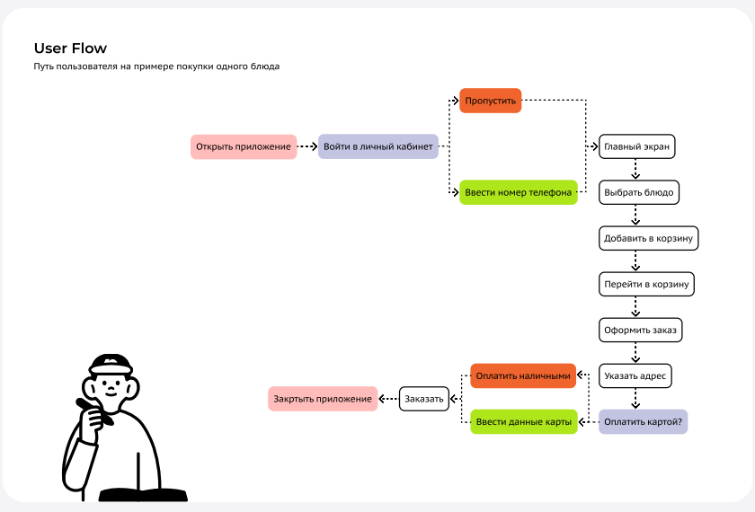
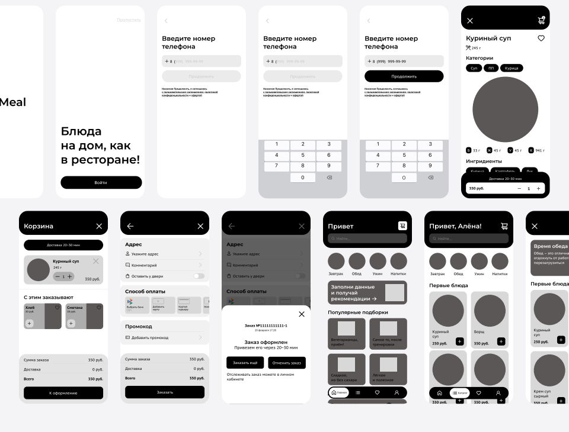
06 / Интерфейс
Каждый экран поддерживает конкретный шаг сценария. Ниже — решения, видимые в макетах, и вопросы для последующей проверки.
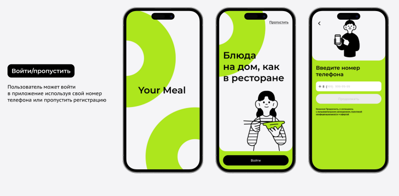
Можно войти по телефону или пропустить регистрацию. Это позволяет сначала посмотреть предложение.
Поиск помогает найти конкретное блюдо, категории — выбрать приём пищи, подборки — начать с предпочтений. Предложение заполнить данные объясняет идею персональных рекомендаций.
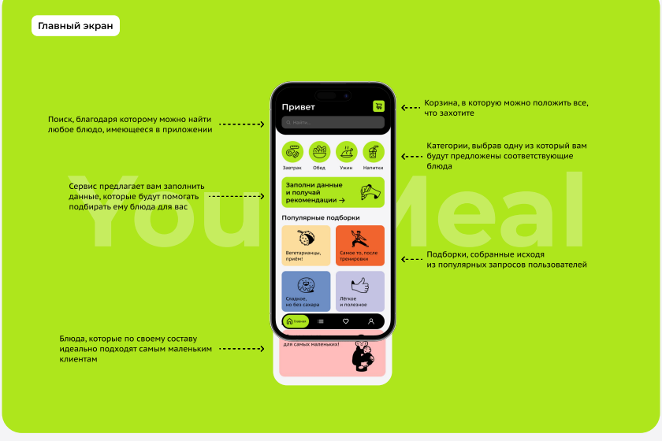
Вес, категории, ингредиенты и пищевая ценность собраны рядом с блюдом. Важно проверить, достаточно ли этой информации для решения.
Видны количество, дополнительные позиции, доставка и сумма. Адрес, комментарий, оплата и промокод собраны в следующем шаге.
Финальный экран сообщает, что заказ оформлен, показывает номер и интервал доставки; доступны повторный заказ и отмена.
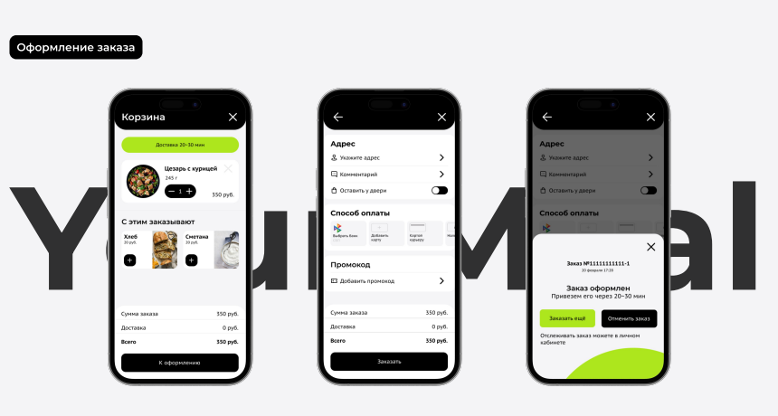
07 / Визуальная система
Светлый фон и чёрные элементы задают контраст, лаймовый выделяет основные акценты. Фотографии еды помогают выбирать, а линейные персонажи поддерживают узнаваемость. В PDF указаны Montserrat и PT Sans Caption, четырёхколоночная сетка с полями 24 px и межколонником 20 px.
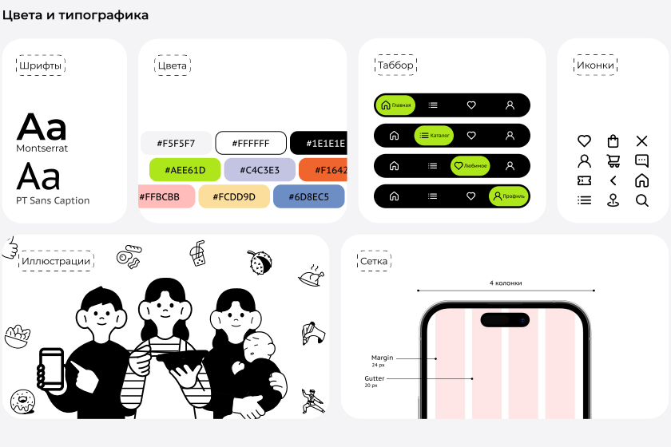
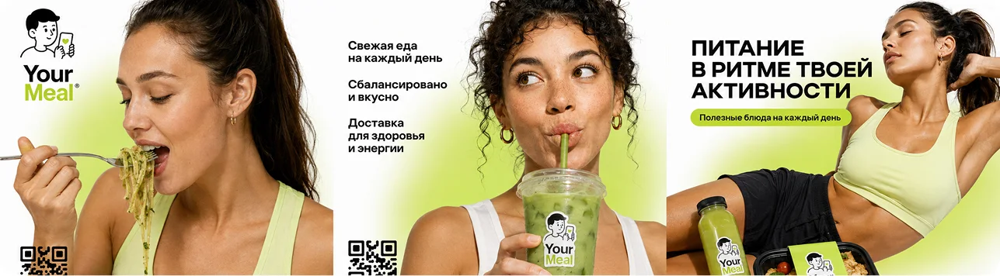
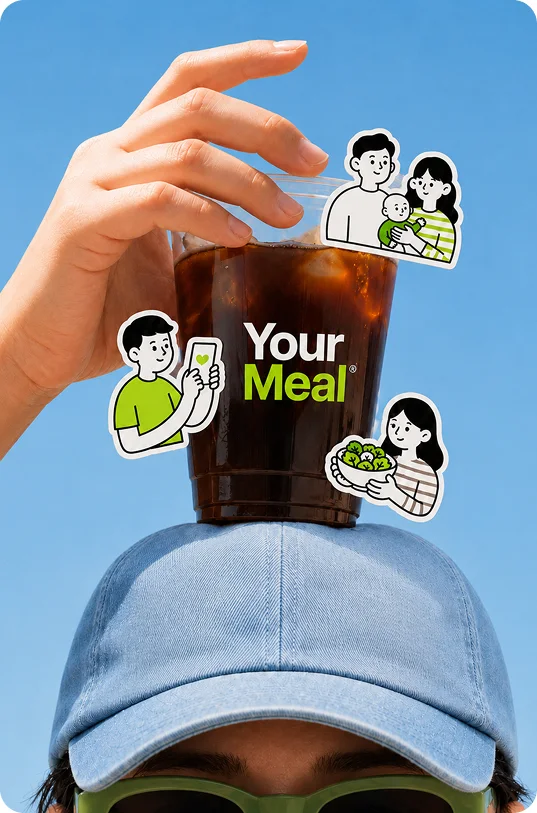
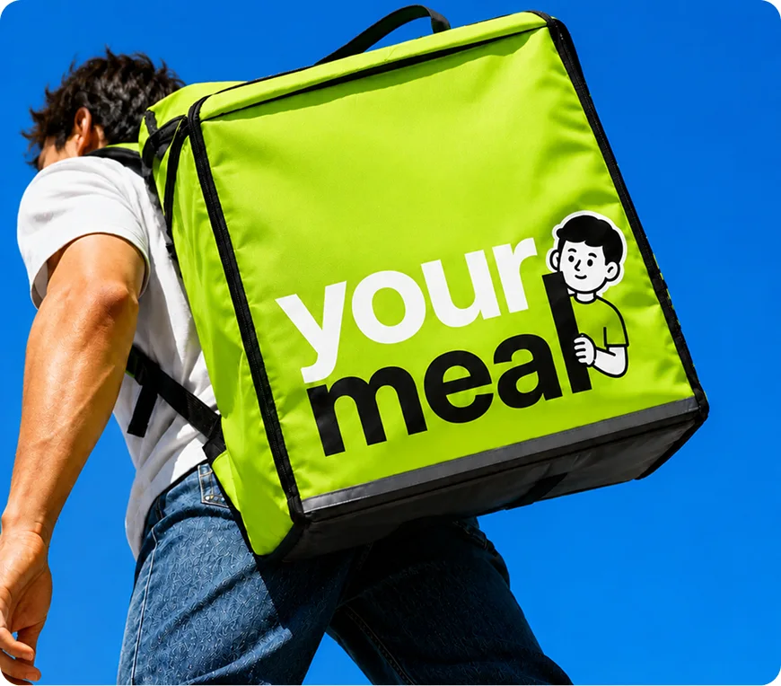
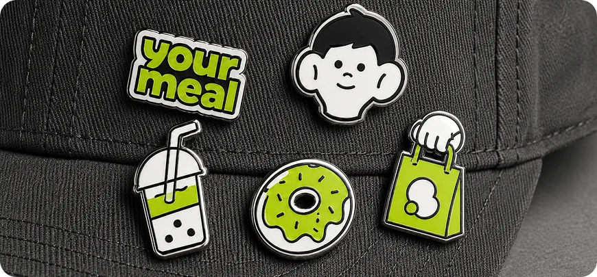
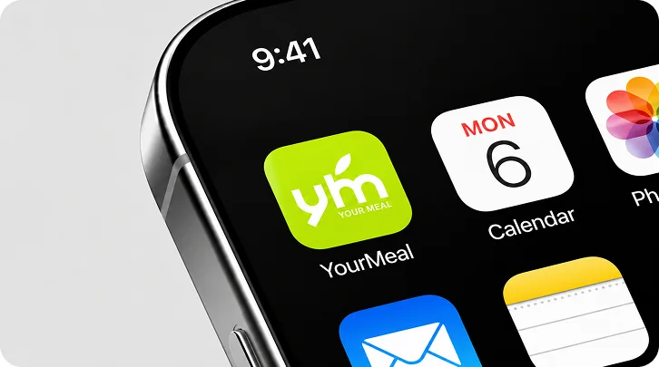
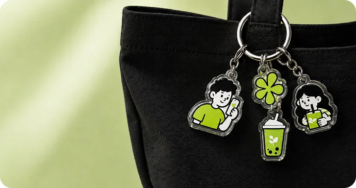
Мокапы из портфолио иллюстрируют визуальную систему, а не подтверждают выпуск мерча или запуск приложения.
08 / Итог и проверка
Результат проекта — спроектированный путь покупки одного блюда, User Flow, вайрфреймы и UI. В описании этапов упоминается тестирование, но протокол, задачи и результаты тестов в переданных материалах не приведены.
Может ли человек подобрать блюдо по своим ограничениям и найти состав? Наблюдать за действиями, ошибками и вопросами.
Может ли пользователь без подсказок задать адрес, понять способ оплаты и итоговую стоимость? Фиксировать успешность и затруднения.
Понятен ли интервал прибытия и что происходит после оформления? Отдельно исследовать доверие к упаковке и качество реального сервиса.
План проверок сформулирован для следующего этапа. В кейсе не заявлены рост конверсии, продажи или подтверждённое улучшение опыта.